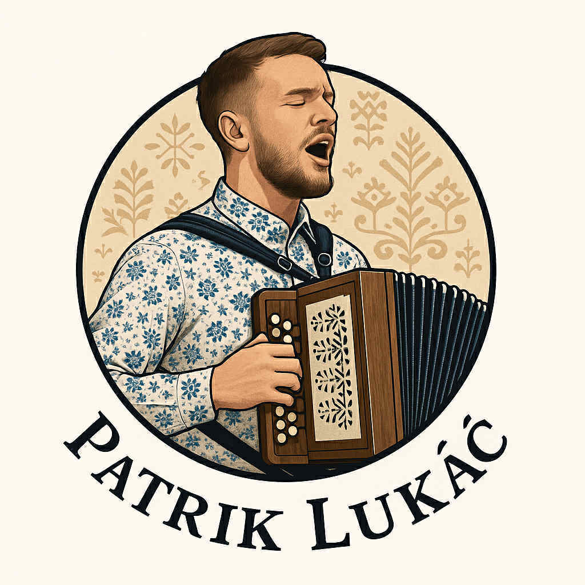
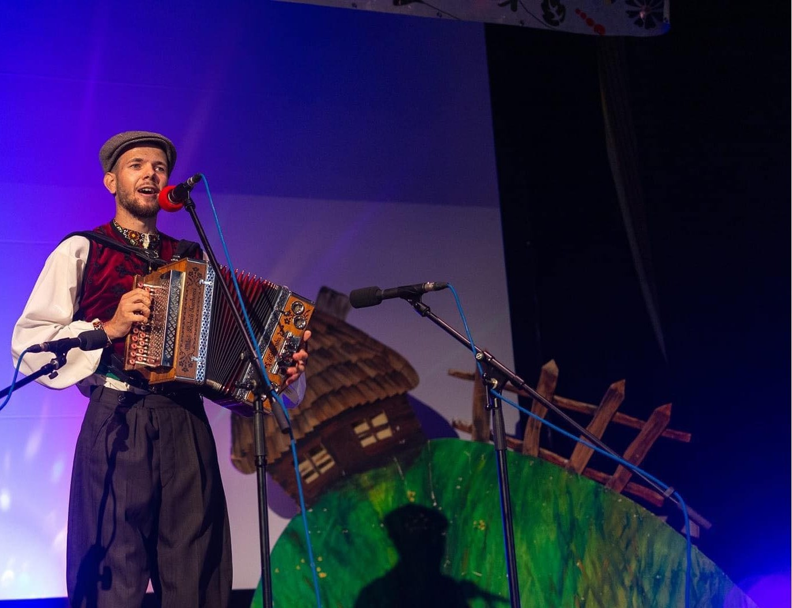

Heligonkár
„Kde slová zlyhajú, hudba prehovorí.“Hans Christian Andersen

Patrik Lukáč je známy slovenský heligonkár, preslávený svojou virtuóznosťou a interpretáciou tradičnej slovenskej hudby. Jeho hra na heligonke spája folklórne prvky s moderným prístupom, čím prispieva k popularizácii tohto nástroja.
Patrik pôsobí ako významná postava slovenskej tradičnej hudby, najmä v oblasti heligonky. Okrem samotnej hry sa venuje aj šíreniu povedomia o heligonke, ktorá má v slovenskej kultúre dlhú tradíciu. Často vystupuje na kultúrnych podujatiach a festivaloch, kde predstavuje vlastné úpravy známych piesní aj originálne skladby.
Jeho štýl kombinuje klasické folklórne prvky s modernými prvkami, čo oslovuje široké publikum. Okrem koncertnej činnosti sa Patrik Lukáč aktívne podieľa na vzdelávaní mladých hudobníkov, ktorým odovzdáva svoje skúsenosti a znalosti. Jeho videá sú dostupné na Instagramovom účte lukac_pato a na Facebookovej stránke Patrik Lukáč.
Chcete heligonku na svadbe, oslave či obecnej slávnosti? Napíšte alebo zavolajte.